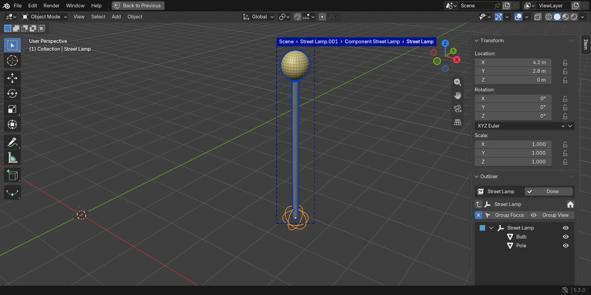
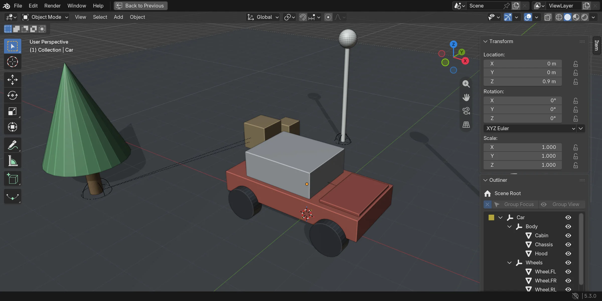

Products › Hierarchy Outliner
Hierarchy Outliner

Groups that behave like groups. Finally, in Blender.
In Maya, 3ds Max, Illustrator or Figma, a group is something you step into. You double-click it, work on its contents, and the rest of the scene stays out of your way. In Blender, parenting gives you the hierarchy but not the workflow: the Outliner is busy with collections and view layers, and nothing stops you from grabbing the wrong object.
Hierarchy Outliner brings that workflow to Blender. You get an outliner that shows parents and children only, and groups you can enter and leave from the 3D view. What you work on is outlined by role, and components work like symbols. Every move has a shortcut, and nothing is written to your file that you did not ask for.
Picture this
You select the parts of a car's body and press Ctrl+G: they are now a group, under an Empty Sphere at their common parent. You double-click the group. The rest of the scene turns to grey wireframe and can no longer be clicked. A dashed frame shows the group's bounds, and the breadcrumb Scene › Car › Body shows where you are. You add a bolt with Shift+A, and it lands inside the group. Backspace takes you back up a level.

What you get
A parent-and-child outliner

- Sidebar (N) › Outliner: your scene as a tree of parents and children. No collections, no view layers.
- Three columns, like Blender's own Outliner: state (blue = the outliner's active group, yellow = active object, orange = selected), hierarchy, and an eye to hide or show.
- Click selects, Shift+Click adds or removes, Ctrl+Click selects a whole branch, a double-click enters the group, Right-click opens the Actions menu.
- The search keeps the parents of what it finds, so you always see where an object lives.
Group and ungroup

- Ctrl+G groups the selection under a new Empty Sphere, at the closest common parent, centred on the objects. Nothing moves on screen.
- Ctrl+Alt+G dissolves the selected groups: their children go to the group's parent.
- Add to Group… opens a searchable list of every group, with its full path, like M for collections. Leave Group moves the selection up one level.
- Prefer to keep Ctrl+G for collections? Switch to the T layout: Ctrl+T groups, Alt+T ungroups.
Enter and exit groups

- Double-click an object in the 3D view to enter the group that holds it, one level at a time. Double-click empty space to step out.
- Enter does the same with the active object. Backspace goes up one level and selects the group you left.
- Inside a group, the targets are its direct children. Clicking a deeper object picks the child that contains it, the way Illustrator works.
Focus modes

Choose what the rest of the scene does while you work in a group, from the V pie menu or the panel:
- Group Focus: only the group can be selected; everything else turns to grey wireframe (viewport only, the render is unchanged).
- Group View: only the group is shown, in every 3D view. The outliner still lists the rest, greyed, so you can switch groups.
- Off: entering a group is only for navigating; nothing is limited.

Role outlines

- While you are inside a group, every object is outlined in the colour of its role: child, grandchild, or outside. Component instances get their own pair of colours.
- The outlines are drawn on top of the viewport. Object colours and shading stay as they are, and there is no mode to leave.
- Six colours, all adjustable. Toggle the outlines from the V pie; they hide with the viewport overlays.
Group frame and breadcrumb

- A dashed frame wraps everything the active group contains, following the objects' silhouettes as you see them.
- The breadcrumb on its corner shows the path, for example Scene › Car › Body · Group Focus.
- Double-click a step to jump there. Scene takes you back to the root.

Components

- Turn a group into a component with Make Instanceable. Its contents move to the Components layer and an instance takes their place.
- Every instance shows the same source: edit it once and they all follow.
- Add an instance from Shift+A › Component, or with New Instance, which follows the mouse like Shift+D.
- Double-click an instance twice (or press Enter twice) to edit its component in isolation. Backspace from the top, or Done, brings the scene back.
- Detach turns an instance back into real objects. The Components panel lists every component with its instance count.

Groups that behave

- Hide a group, hide its contents: with the eye, H or any other way. Children keep their own state and come back with the group. Alt+H reveals everything.
- Delete a group, delete its contents: X and Del remove an Empty with everything under it, with the same confirmations as Blender. Shift+X deletes it everywhere.
- New objects join the current group: anything you add (Shift+A, import, paste) lands next to the active object, inside the group you are in, like a new layer in a layer stack.

Nothing written to your file
Focus modes, ghosts, frames and outlines only change what the viewport shows. Switch back to Off and everything is exactly as it was: an object you had hidden or locked yourself stays hidden or locked. Collections and view layers are never touched, so your files stay clean for everyone else on the team.

Shortcuts
In the 3D view, Object Mode. Each one can be turned off in the add-on preferences.
| Shortcut | Action |
|---|---|
| Ctrl+G | Group |
| Ctrl+Alt+G | Ungroup |
| Ctrl+T / Alt+T | Collections: Create New Collection / Remove from Collection (G layout) |
| Ctrl+W | Groups menu |
| Enter | Enter the group of the active object, one level per press |
| Backspace | Go up one level |
| Double-click an object | Enter its group, one level per double-click |
| Double-click empty space | Go up one level |
| V | View pie: Group Focus (left), Group View (right), Off (down), Role Outlines (up) |
| Shift+A › Component | Add a component instance at the 3D cursor, in the current group |
| H / Alt+H | Hide (with contents) / reveal all |
| X, Del / Shift+X, Shift+Del | Delete a group with its contents / delete it everywhere |
Documentation
Installation
- Download
hierarchy_outliner-1.27.1.zipfrom your Superhive account. Do not unzip it. - In Blender 4.2 or later, drag the zip file into the Blender window and confirm. Or go to Edit › Preferences › Get Extensions, open the menu at the top right, choose Install from Disk… and select the zip.
- Make sure Hierarchy Outliner is enabled in the list of extensions.
- In the 3D view, press N to open the sidebar and click the Outliner tab.
To update, install the new zip the same way: it replaces the previous version.
Getting started in one minute
- Select a few objects and press Ctrl+G: a group appears in the Outliner panel.
- Double-click one of the grouped objects in the 3D view: you are inside the group, in Group Focus.
- Click inside the group: you select its direct children. Double-click again to go one level deeper.
- Press V to switch between Group Focus, Group View and Off.
- Press Backspace to go back up, or click the home button in the panel to return to the root.
The Outliner panel
- Top row: the group you are in, a button to go up (Go Up) and one to return to the root (Exit to Root). While a component is being edited, a Done button replaces them.
- Focus mode: three buttons, only one active: Off (×), Group Focus, Group View.
- The list: one row per object, children under their parent. The triangle folds a branch. Hidden objects stay in the list, greyed; a click makes them the active row without selecting them in the 3D view.
- The outliner's active group (blue square) is the last row you double-clicked. A simple click or a selection in the 3D view does not change it.
- Actions menu (right-click a row): for the 3D view selection, Group, Ungroup, Add to Group…, Leave Group. For the row itself, Add Selection Here, Make Instanceable, Edit Component, New Instance, Detach, Leave Group, Delete. Entries that do not apply are greyed.
Entering groups: the rules
- A double-click on an object activates the ancestor of that object that sits just under the active group (without an active group: its topmost ancestor). That ancestor becomes the active group and you are inside it. One level per double-click; a leaf object is only selected.
- Enter follows the same rule with the active object, which stays the target until you reach it.
- Backspace (Go Up) is an entry into the level above, with the same rules; the group you left becomes the active object. At the root, it leaves all groups.
- On a component instance, the first double-click (or Enter) activates it, the second edits its component.
Add objects to a group
- Add to Group… (Groups menu, Actions menu): pick any group from a searchable list, the active group first.
- Add Selection Here: double-click a group in the Outliner panel to make it the active group, select objects in the 3D view, then right-click the group › Add Selection Here. This also works on an empty Empty.
- Leave Group: the selection moves up one level, to the parent of its group.
- In every case, nothing moves on screen.
Components: the workflow
- Build a group, then right-click it in the Outliner panel › Make Instanceable. Its branch moves to the Components layer (a collection excluded from the view layer) and an instance takes its place, at the same spot and under the same parent.
- Add more instances with New Instance or Shift+A › Component.
- To edit, double-click an instance twice. The rest of the scene is hidden in every 3D view and the view frames the source. Objects you add now go into the component.
- To finish, press Backspace at the top of the component, double-click empty space, or click Done. The scene comes back as it was.
- The Components panel lists every component with its instance count (×N). Use the pencil to edit, the bin to delete a component with all its instances (after confirmation), and double-click a name to rename it.
Component sources appear neither in the 3D view, nor in renders, nor in the Outliner panel (except while editing). Deleting an instance keeps its source in the Components layer.
Settings
All settings are in the Feature Toggles panel (under Components) and in the add-on preferences; both show the same options.
| Setting | Choices | Default |
|---|---|---|
| Inside a group, target | Children (direct children only) · All Children (any descendant) | Children |
| On Enter | Group Focus (switch from Off to Group Focus) · Keep Mode | Group Focus |
| Select All on Enter | On · Off | Off |
| Group Focus: the rest as grey wireframe | On · Off | On |
| New objects join the current group | On · Off | On |
| Role Outlines | On · Off, six colours | On |
| Group Frame | On · Off | On |
| Hiding a group hides its contents | On · Off | On |
| Group Keys | G · T · None | G |
| Delete a Group | Whole Group · Like Blender | Whole Group |
| Shortcuts | Enter / Backspace / double-click, Ctrl+W menu, V pie: each on or off | All on |
FAQ
Does it change my scene or my collections?
No. Groups are ordinary Empties with ordinary parenting, so your files open fine without the add-on. Focus modes, ghosts, outlines and frames are display only, and collections and view layers are never touched. The only things the add-on creates are what you ask for: the Empties of your groups and the Components layer.
Does it work with scenes I already have?
Yes. Any parent with children is a group as far as the add-on is concerned, whatever its type.
I use Ctrl+G for collections. What happens to it?
With the default G layout, Create New Collection moves to Ctrl+T and Remove from Collection to Alt+T. If you would rather keep Blender's keys, pick the T layout or None in the preferences. Alt+G always keeps Clear Location.
Does Group Focus or Group View affect renders?
No. The grey wireframe, hidden objects and outlines only affect the viewport. Selection limits are lifted as soon as you switch back to Off or leave the group.
Can I turn a feature off?
Yes. Every feature and every shortcut can be switched off on its own in Feature Toggles or the add-on preferences.
Which Blender versions are supported?
Blender 4.2 and later. The add-on is a Blender extension: install the zip from disk or drag and drop it.
Can I edit a component that comes from a linked library?
No. Linked collections cannot be edited from the file that links them; edit them in their own file.
Changelog
- 1.27.1: the group frame and the role outlines share the same Empty shapes and cache.
- 1.27.0: clickable breadcrumb on the group frame; frame drawn in the Child colour.
- 1.26.0: dashed frame around the active group.
- 1.25.0: breadcrumb of the active group in the 3D view.
- 1.24.3: a group is now an Empty Sphere.
- 1.24.0: role outlines drawn on the GPU, replacing the former Colored mode.